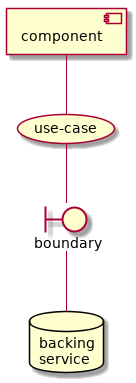

Backing Services¶
The various backing services have to be implemented somehow. For the purpose of this POC implementation, we are using three services (PostgreSQL, ElasticMQ and Minio). These were chosen because they are convenient to run locally (see the docker compose configurations in the GitHub repository) They also have directly compatible cloud-hosted alternatives, which greatly simplifies the "cloud engineering" required to run the service in a a highly scalable and highly available way.
![@startuml
artifact Postgresql {
database subscriptions
}
artifact Minio {
database message_lake [
message
lake
]
database object_lake [
object
lake
]
database object_acl [
object
ACL
]
}
artifact ElasticMQ {
database notifications
database bc_inbox [
channel
inbox
]
database ch_outbox [
channel
outbox
]
database obj_ret [
object
retrieval
]
database msg_upd [
message
updates
]
database delivery_outbox [
delivery
outbox
]
database reject [
rejected
messages
]
database pend [
pending
deliveries
]
}
@enduml](_images/plantuml-47c5d59ee9f1c60b6e08de7e48c673c7d2effbec.png)
What matters about these backing services is that they are hidden behind abstractions. These are shown as boundaries in the API and worker process diagrams (e.g. object_lake.get_body, object_lake.post_file, object_acl.search, object_acl.allow_access).

These boundaries deal only in objects from the domain model, i.e. the code in intergov/domain. That domain code is independent of any implementation (backing service).
This intent of this technical detail is to simplify the implementation of backing services using whatever technology is most appropriate for the country operating the ICL node.